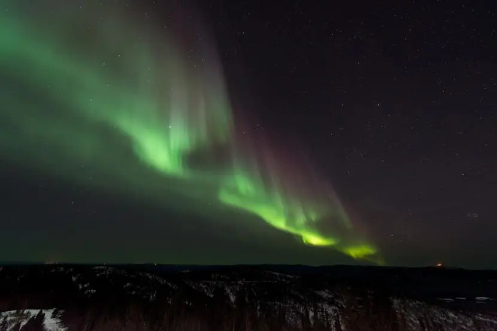

Faktas 1
Šiaurinės pašvaistės yra kitose planetose. Šiaurės pašvaistė nėra būdinga tik Žemės planetai kadangi skirtinguose kosminiuose zonduose buvo rodomi aurorų vaizdai Jupiterio ir Saturno planetose. Šių planetų auroras yra daug įspūdingesnis ir didesnis nei Žemėje, nes magnetiniai laukai šiose planetose yra daug intensyvesni ir galingesni nei Žemėje.